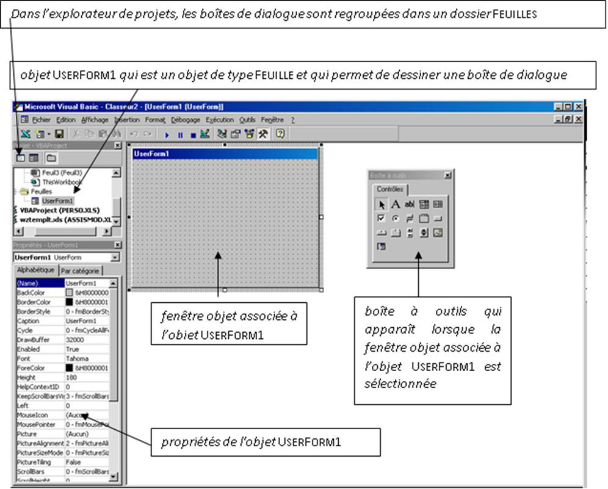
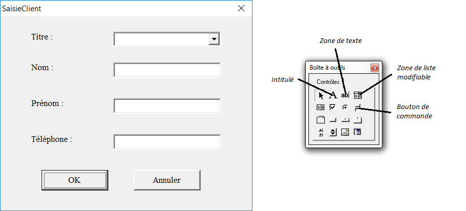

Chapitre 11 - Les objets UserForm
Les objets UserForm sont des boîtes de dialogue définies par l’utilisateur. Ce tutoriel explique comment créer une boîte de dialogue permettant de saisir les clients d’une entreprise, comme le montre la capture d’écran suivante :
1) Ouvrir un nouveau classeur et l’enregistrer sous SAISIECLIENTS.XLS.
2) Renommer la feuille de calcul FEUIL1 en cliquant avec le bouton droit sur l'onglet FEUIL1, activer la commande RENOMMER et taper CLIENTS.
3) Saisir dans la feuille de calcul CLIENTS, les données suivantes :
4) Renommer DIVERS la feuille de calcul FEUIL2 et saisir les données suivantes :
On peut distinguer deux phases dans la création d’un objet UserForm :
le design de l’objet UserForm ;
l’association de code à l’objet UserForm et à ses différents contrôles.
Le design d’un objet
UserForm consiste à placer des
contrôles
sur l’objet. Un contrôle est un objet : il possède des propriétés, des méthodes et des événements définis.
L’association de code à l’objet UserForm consiste à déterminer le comportement de l’objet UserForm et de ses contrôles face aux différents événements utilisateur pouvant l’affecter et à écrire le code permettant d’exploiter les actions effectuées par l’utilisateur.
Créer un objet UserForm
1) Ouvrir l’éditeur de Visual Basic et cliquer sur la commander INSERTION puis USERFORM. Un objet UserForm1 apparaît, ainsi qu'une boîte à outils permettant d'ajouter des contrôles à l’objet.

L’explorateur de projets permet d’afficher le code d’un objet UserForm à l’aide du clic droit de la souris et de l’option CODE ; ou d’afficher l’objet lui-même à l’aide du clic droit de la souris et de l’option AFFICHER L’OBJET.
2) Modifier le nom de l’objet UserForm par défaut en FenetreSaisieClients dans la propriété NAME de la fenêtre PROPRIETES. Ce nom est le nom qui sera utilisé dans le code pour faire référence à l’objet UserForm.
3) La propriété CAPTION de l’objet UserForm correspond au libellé qui apparaît dans la barre de titre de la fenêtre. Modifier cette propriété en Saisie Clients.
On veut créer l’objet UserForm suivant :

Cet objet est composé des contrôles suivants :
un INTITULE et une ZONE DE LISTE MODIFIABLE pour saisir le titre du client (Madame, Mademoiselle ou Monsieur) ;
trois INTITULES et trois ZONES DE TEXTE pour saisir le nom, le prénom et le téléphone du client ;
deux BOUTONS DE COMMANDE OK et Annuler.
Pour placer un contrôle dans l’objet UserForm, cliquer sur l’objet voulu de la BOITE A OUTILS et le faire glisser vers l’objet UserForm. Dès qu’un contrôle a été placé sur l’objet UserForm, définir son nom grâce à la propriété NAME.
Il est recommandé d’utiliser des noms évocateurs pour ses contrôles, qui permettent d’identifier le type d’objet qu’ils représentent et leur utilité.
Placer les différents contrôles de l’objet UserForm et modifier leurs propriétés comme suit :
Afficher et fermer un objet UserForm
L’instruction Load permet de charger un objet UserForm en mémoire sans l’afficher. La méthode Show de l’objet UserForm permet d’afficher un objet UserForm et de le charger en mémoire, si cela n’a pas déjà été fait.
Nous allons maintenant écrire la procédure qui permet d’afficher la boîte de dialogue de saisie d’un client.
1) Dans l’éditeur de Visual Basic, activer la commande INSERTION MODULE. Un module de code MODULE1 s’ouvre. Renommer le ModuleSaisieClients à l’aide de la propriété NAME.
2) Saisir la procédure suivante dans le module de code :
Sub ProgPrincSaisieClients()
Sheets("Clients").Activate
FenetreSaisieClients.Show
End Sub
3) Exécuter cette procédure (pour fermer la boîte de dialogue FenetreSaisieClients, cliquer sur son bouton de fermeture).
L’instruction Unload permet de fermer un objet UserForm et de l’effacer de la mémoire, les valeurs de ses contrôles sont alors perdues. La méthode Hide de l’objet UserForm permet de faire disparaître un objet UserForm de l’écran sans le supprimer de la mémoire.
L’instruction Unload ou la méthode Hide sont généralement placées dans les procédures événementielles attachées aux boutons de validation de l’objet UserForm, comme par exemple les boutons de commande OK et Annuler.
Associer du code à un objet UserForm
Les contrôles placés sur un objet UserForm et l’objet UserForm lui même sont réceptifs aux événements utilisateurs qui les affectent (clic souris sur un bouton de commande, saisie d'une valeur dans une zone de texte…). On peut ainsi créer des procédures dites procédures événementielles, qui se déclencheront lorsque l’événement correspondant sera repéré.
La syntaxe d’une procédure événementielle attachée à un contrôle de nom NomContrôle (propriété NAME) et déclenchée par un événement NomEvénement est la suivante :
Private Sub NomContrôle_NomEvénement()
...
End Sub
Dans le cas d’une procédure événementielle attachée à un objet UserForm, le nom de l’objet UserForm (propriété NAME) n’apparaît pas dans les instructions de déclaration de la procédure. Il est remplacé par le mot clé UserForm comme suit :
Private Sub UserForm_NomÉvénement ()
...
End Sub
Les événements sont nombreux et varient d’un contrôle à l’autre. En voici, quelques uns :
Événement Change : détecté lors de la modification de la valeur (propriété VALUE) d’un contrôle (par exemple une zone de texte).
Événement Click : détecté lorsque l’utilisateur clique sur un contrôle (par exemple un bouton de commande).
Événement dblClick : détecté lorsque l’utilisateur double-clique sur un contrôle.
Associer du code à un bouton de commande
Nous allons maintenant associer le code nécessaire au bouton de commande OK pour que la boîte de dialogue soit fermée lorsque l’on clique dessus.
1) Aller dans l’éditeur de Visual Basic. Dans l’explorateur de projets, sélectionner l’objet UserForm de nom FenetreSaisieClients et ouvrir son module de code à l’aide du clic droit de la souris et de l’option CODE (ou en double-cliquant dessus).
2) Dans la liste de gauche au sommet du module de code, sélectionner l’option ButtonOK. Dans la liste de droite au sommet du module de code, sélectionner l’événement Click.
3) Compléter la procédure événementielle ButtonOK_Click qui apparaît comme suit :
Private Sub ButtonOK_Click()
Call Unload(Me)
End Sub
4) Pour tester cette procédure, exécuter la procédure ProgPrincSaisieClients du module de code ModuleSaisieClients.
5) Associer le code nécessaire au bouton Annuler pour que la boîte de dialogue soit fermée lorsque l’on clique dessus.
Initialiser un objet UserForm
L’événement Initialize d’un objet UserForm est détecté lorsque l’objet UserForm est chargé, à l’aide de la méthode Show ou de l’instruction Load.
Lorsque la méthode Show est appliquée à un objet UserForm masqué par la méthode Hide, l’objet UserForm n’est pas rechargé mais uniquement affiché. L’événement Initialize n’est alors pas déclenché.
La procédure événementielle associée à l’événement Initialize d’un objet UserForm s’exécute avant l’affichage de l’objet et a la syntaxe suivante :
Private Sub UserForm_Initialize ()
...
End Sub
Cette procédure permet d’effectuer des réglages dans l’objet UserForm avant son chargement.
Nous allons écrire le code nécessaire pour affecter les valeurs “Madame”, “Mademoiselle” et “Monsieur” à la zone de liste modifiable ComboBoxTitre, en utilisant les valeurs qui se trouvent dans la plage de cellule A1:A3 de la feuillle de calcul DIVERS.
1) Aller dans l’éditeur de Visual Basic. Dans l’explorateur de projets, selectionner l’objet UserForm de nom FenetreSaisieClients et ouvrir son module de code à l’aide du clic droit de la souris et de l’option CODE.
2) Dans la liste de gauche au sommet du module de code, sélectionner l’option UserForm. Dans la liste de droite au sommet du module de code, sélectionner l’événement Initialize.
3) Compléter la procédure événementielle UserForm_Initialize qui apparaît comme suit :
Private Sub UserForm_Initialize()
Dim i As Integer
i = 1
Do Until IsEmpty(Worksheets("Divers").Range("A" & i))
Call Me.ComboBoxTitre.AddItem(Worksheets("Divers"). _
Range("A" & i).Value)
i = i + 1
Loop
End Sub
Pour tester cette procédure, exécuter la procédure ProgPrincSaisieClients du module de code ModuleSaisieClients.
Il existe une autre méthode pour initialiser la zone de liste modifiable ComboBoxTitre avec les valeurs “Madame”, “Mademoiselle” et “Monsieur”, en la liant à la plage de cellule A1:A3 de la feuillle de calcul DIVERS. Pour lier un contrôle à une plage de cellules, il faut renseigner la propriété ROWSOURCE (cf. aide en ligne) du contrôle avec la plage de cellules voulue (dans notre cas, Divers!A1:A3) ou encore mieux avec le nom de la plage de cellules voulue, ce qui suppose de nommer cette plage de cellules.
Cette méthode, contrairement à la précédente, ne pourra pas prendre en compte les éventuelles modifications faites sur le titre d’un client (ajout ou suppression d’un titre). La zone de liste modifiable ComboBoxTitre est liée à la plage de cellule fixe A1:A3 de la feuille de calcul DIVERS.
Accéder aux contrôles d’un objet UserForm
Jusqu’à présent, nous avons créé un objet UserForm pour saisir de nouveaux clients, et, ouvert et fermé cet objet. Cependant, si l’utilisateur saisit des données dans l’objet UserForm, ces dernières ne sont pas recopiées dans la liste de données Excel correspondante.
La mise à jour de la liste de données Excel correspondant aux données du client doit être faite lorsque l’utilisateur clique sur le bouton OK. Elle consiste à insérer une nouvelle ligne dans la liste de données et à recopier les valeurs des contrôles de l’objet UserForm dans les bonnes cellules de la nouvelle ligne.
1) Aller dans l’éditeur de Visual Basic. Dans l’explorateur de projets, sélectionner l’objet UserForm de nom FenetreSaisieClients, ouvrir son module de code et compléter la procédure événementielle ButtonOK_Click comme suit :
Private Sub ButtonOK_Click()
Sheets("Clients").Rows(2).Insert
Range("A2:D2").Font.Bold = False
Sheets("Clients").Range("A2").Value=Me.ComboBoxTitre.Text
Sheets("Clients").Range("B2").Value = Me.TextBoxNom.Text
Sheets("Clients").Range("C2").Value=Me.TextBoxPrénom.Text
Sheets("Clients").Range("D2").Value = Me.TextBoxTél.Text
Call Sheets("Clients").Range("A1"). _
Sort(Key1:= Sheets ("Clients").Columns("B"), Header:=xlYes)
Call Unload(Me)
End Sub
Si, dans les procédures événementielles ButtonOK_Click et ButtonAnnuler_Click, on utilise la méthode Hide pour masquer l’objet UserForm à la place de l’instruction Unload, les ressources mémoires de l’objet UserForm ne sont pas libérées. Lors d’un nouvel affichage de l’objet UserForm avec la méthode Show, les différents contrôles de l’objet ont alors les mêmes valeurs que lorsqu’il a été masqué.
Afficher un objet UserForm à partir d’un bouton d’une feuille de calcul
On veut pouvoir afficher la boîte de dialogue FenetreSaisieClients à partir d'un bouton de commande de la feuille de calcul CLIENTS.
1) Aller dans Excel et cliquer sur l’onglet Développeur. Cliquer ensuite sur l'outil Insérer.
2) Une barre d'outils FORMULAIRES apparaît. Cliquer sur l'objet BOUTON, puis cliquer sur la feuille de calcul CLIENTS.
3) Dans la nouvelle fenêtre AFFECTER UNE MACRO qui apparaît, sélectionner la macro ProgPrincSaisieClients et cliquer sur le bouton OK.
4) Cliquer sur le bouton
BOUTON 1 qui vient d'être créé et renommer le
SAISIE CLIENTS.
5) Tester le bouton SAISIE CLIENTS.